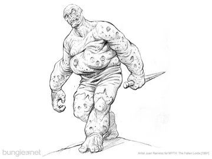
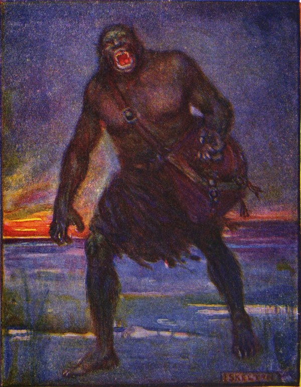
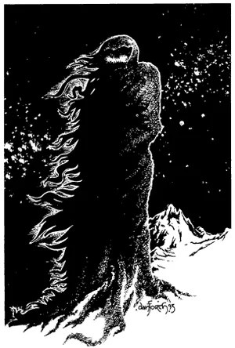
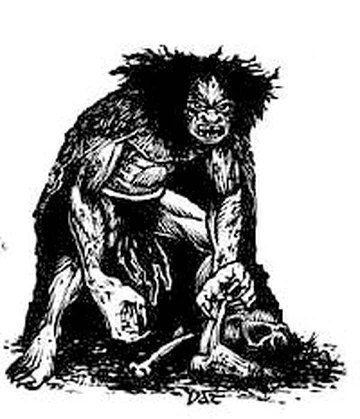

In Myth a wight comes shambling through the fen,
All bloat and blade, to burst among our men;
One stab, one blast, and every soldier near
Stands rooted, frozen fast by gas and fear.

But older far than Balor's darkest night,
Our tongue once had a kinder use for “wight”:
A being, any creature, man or sprite;
And Chaucer wrote of one, a “sweete wight”.

The Norse had wights who guarded hill and land,
And helping sprites who'd lend a needed hand;
So, Walter, be that kind of wight, and true:
Not one who bursts, but one who sees us through.

You've fetched Sir Mauriac's long Tale to play;
Then march it out, and tell us, come what may,
Where thrall stand tall that ought to hide below,
Where giants balk, and units moonwalk slow.
So come and post your findings on our page,
With screenshots, if you like, from every stage;
And every bug you find, we'll set aright,
With thanks to you, our kind and helping wight.
From Edward and Claude